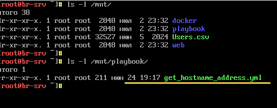
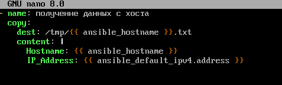
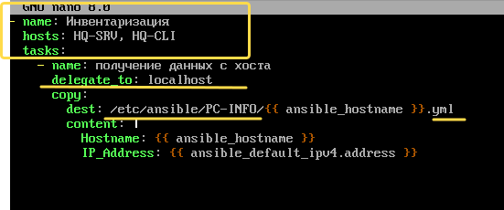
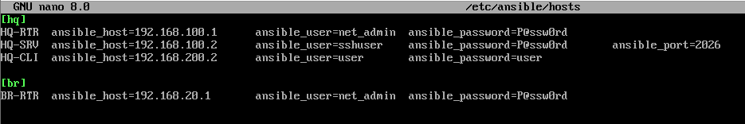
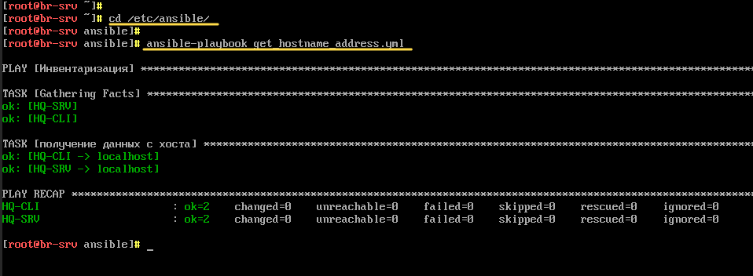
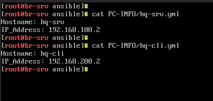

¶ Задание
8. Реализуйте механизм инвентаризации машин HQ-SRV и HQ-CLI через Ansible на BR-SRV:
- Плейбук должен собирать информацию о рабочих местах:
- Имя компьютера
- IP-адрес компьютера
- Плейбук, должен быть размещен в директории /etc/ansible, отчёты в поддиректории PC-INFO, в формате .yml. Файлы должны называется именем компьютера, который был инвентаризирован
- Файл плейбука располагается в образе Additional.iso в директории playbook
¶ Реализация
Смотрим подключен ли cd-rom

Монтируем Additional.iso
Смотрим содержимое Additional.iso

Копируем get_hostname_address.yml c cd-rom в директорию /etc/ansible
Меняем права на фай
Открываем на редактирование playbook /etc/ansible/get_hostname_address.yml
Исходный playbook

Дополняем playbook

Получаем
Проверяем, что файл инвентаризации /etc/ansible/hosts имеет следующий вид

Создаем каталог PC-INFO
Переходим в каталог /etc/ansible
Запускаем playbook

Проверяем
